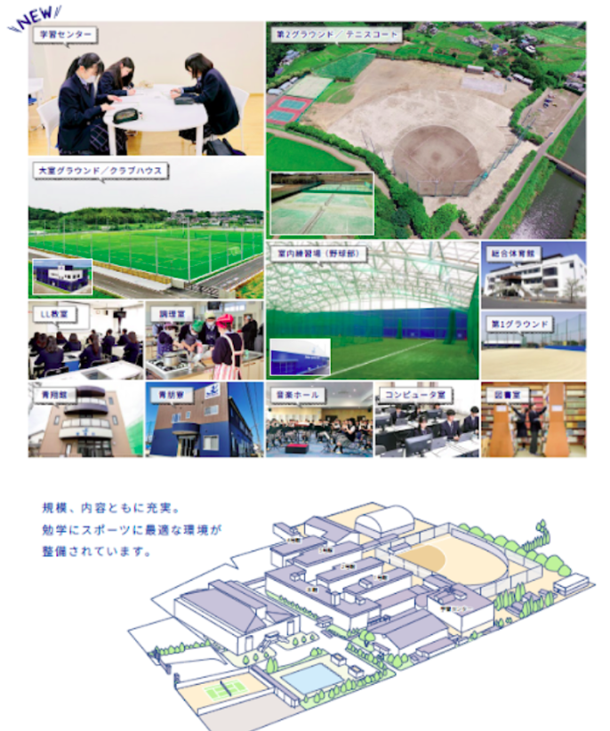

学校紹介
校長・沿革
校長のプロフィールにするので、ここにプロフィールが入ります。
テキストテキストテキストテキストテキストテキストテキストテキストテキストテキストテキストテキスト
「人生夢失うことなかれ」
「あなたの夢は何ですか？」と聞かれて明確にこたえられる人はどれほどいるでしょうか。「夢＝就きたい職業」といった公式を子どものころから教えられ「高校生になったら、なりたい職業を見つけなきゃ」と焦っている人はいませんか。確かに、夢や目標として職業をあげるのは間違いではありません。しかし、人生100年時代の今、夢であった理想の仕事への就職が、幸福な人生を保証してくれるとも限りません。
この言葉を本校は教育理念としています。夢にゴールはありません。その時その瞬間に達成しては、また抱くものです。夢には大小もありません。自分で夢を見つけ、抱くことが大切です。皆さんが生きていく時代は、将来の予測が難しくなることから、VUCA時代と呼ばれています。テクノロジーが想定以上の速さで発達し、人からAIに代わる職業も少なくありません。そのような時代に夢を持ち、強く生き抜くためには何が必要なのでしょうか。
霞ヶ浦高等学校では探究学習を取り入れ、AIには不可能とされている「0から1を生み出す力」を養っています。たとえば、大手企業と共に研究開発を考える授業や阿見町の課題を見つけ出し解決策を提案する授業など、これからの時代に必要とされる非認知能力の向上を図り実現しています。
一生に一度の青春を霞ヶ浦高等学校で共に過ごし、校訓である「至誠」「自由」「責任」「敬愛」「勤勉」のもと、夢を抱き、優しく、行動力のある大人になりませんか。本校で「将来なりたい自分は何なのか」「そのために必要とする力は何なのか」そして「今やるべきことは何なのか」を一緒に考え、学び、「夢のStart Line」に立ちましょう。
アクセス（交通案内）
交通機関のご案内
- JR常磐線「神立駅」から徒歩またはバス
- JR常磐線「土浦駅」からバス
- 各方面からのスクールバスを運行（詳細要確認）
〒300-0000 茨城県かすみがうら市○○町1-2-3
TEL: 029-887-0013 / FAX: 029-887-XXXX
特進選抜
主な合格実績 (昨年度)
- 〇〇大学: 1名
- 〇〇大学: 2名
- 〇〇大学: 5名
- 〇〇大学: 10名
- 〇〇大学: 8名
- (他 国公立・難関私大多数)
特徴
- 大学入学共通テスト対策+ 国公立2次試験対策の充実
- 毎日7限授業 + 最低週3回の補習
- 学習センターを活用し、専属の担当教員によるきめ細かな個別最適化指導
- 定員30名以内の少人数クラス
「自考自動」
「自考自動」とは、特進選抜コースの生徒へ向けて作ったオリジナルの四字熟語です。この言葉を胸に先輩たちは日々の学校生活を送っています。将来、他者をけん引する存在になれるように、様々なことを学び体験します。皆さんが霞ヶ浦高等学校に来ると会える「スクールサポーター」もその1つです。そして高校生活の中心である学習を通して、「一生学続けられる『学び方』を学ぶ」ことに取り組んでいます。初めは「課題」や「宿題」に取り組み、補習にも参加し学び方を学びます。最終的には自分の力を伸ばすために自分で考えて学習できる力を育みます。
進路活動も充実しており、多くの先輩・友人・教員が様々なことを語り、皆さんをサポートしてくれます。霞ヶ浦高等学校の特進選抜コースで一緒に学び、今までの自分を一層魅力的にしてみませんか？
「学習センターでの学び」
自宅でもない、塾でもない、あなたのための学習空間
あなたなら、“ここ”をどう使う？
・２０時まで開放
原則、最終下校は17：00。でも、学習センターは、20：00まで学習で活⽤できる！！「部活が終わった後、30分だけでも学校で勉強したい！」特進選抜コースで文武両道を目指すこの見方となる施設です。
・教員が近くに常駐、質問は教員待機室へ
質問したい時、職員室まで⾏く必要がない！いつでも質問できる環境を整備。わからないをそのままにしない！聞きやすく、訪ねやすい教員待機室をぜひ体験してみてください。
特進
主な合格実績 (昨年度)
- 〇〇大学: 15名
- 〇〇大学: 30名
- 〇〇大学: 3名
- (他 有名私大多数)
特徴
- 水・木・金の7 限目選択制
（部活動 or 国語・数学・英語の選択演習授業（１年）・ ゼミナール活動（２年）） - 探究活動・ゼミナール活動の充実
（ゼミナール活動＝面接・小論・英検などの対策を２年次で実施） - 部活動と大学進学の両立
- 総合型選抜・学校推薦型選抜での大学進学に特化
「文武両道」
この言葉を胸に先輩たちは学業にも部活動にも全力で取り組んでいます。「メリハリのある高校生活を送りたい！」「部活に本気で取り組みながら大学進学をしたい！」そんな本気の思いを応援します。総合型選抜や学校推薦型選抜に特化した活動を通して、得意な部活動も活かして大学進学を目指します。もちろん部活動に所属していない人も、自分の得意を見つけて・伸ばして・活かして大学進学を目指せます。「キャリア探究」の授業や２年次の「ゼミ」活動で「自分のこと」「社会のこと」を深く考え、そこに向けた行動をすることで、自分独自の武器を手に入れて受験へ臨めます。
多様な入試方式（小論文・面接・集団討論・プレゼンテーション）に対応した活動を通して、自分の人生を明確に設計し、大学への強い志望理由を手に入れていきましょう。
「探究学習」
～ 常識を疑え、未来を創れ～
・ゼロからイチを生み出す力
企業インターンや、阿見町と連携した地域探究を通して、ゼロからイチを生み出す力を養います。大人には考えつかない高校生ならではの発想で、「新しい」を作っていきましょう！
・大学受験に向けたキャリア探究
受験対策の１つとして、志望理由書を作成します。この時間を「自分の生き方を見つける時間」と定義し、生徒と教員がともに本気で人生を探究しています。また、ウェルビーイングを扱い、例えば、「なぜあの人は評価されるのか-能力よりも大切なこと-」、「糖尿病になる理由とその未来」、「幸福とはなにか-様々なバイアスから考える-」など、テーマを絞って大学のゼミのような活動をしています。
総合進学
主な進路実績 (昨年度)
- 〇〇大学: 3人
- 〇〇大学: 1人
- 〇〇専門学校: 10人
- 就職・公務員: 5人
特徴
- 基礎学力向上の徹底（学び直し・レベルアップ補習）
- 公務員講座や看護医療系講座の実施
- 各種検定試験の奨励・対策の実施
- 定員40名以内・6 限授業
「力戦奮闘」
この言葉を胸に先輩たちは日々自分自身にできることを精一杯努力しています。様々な進路目標をもつ友人や先輩と交流することで視野を広げ、1年次から行う進路活動によって、自分の希望進路を決めていきます。どの進路にも対応できるように「基礎学力の定着」「学習習慣の確立」を目指し、ときには学び直しをしながら力を向上させていきます。
１年次から継続的に行う外部講師による公務員講座の実施や看護医療系対策、３年次には年内入試対策に特化した「キャリア探究」の授業を通して、幅広く進路実現に向けたサポート体制が整っています。
霞ヶ浦高等学校の総合進学コースで、希望進路を見つけて新たなステージへ進んでみませんか？
「進路にあった特別講座」
・公務員講座、企業インターン
高校卒業後、就職を目指せるのもこのコースの特徴です！特に人気の公務員は、1年次から特別講座を設けています。企業インターンも3年次に参加可能で、自分に合った就職先を見つけ出すことができます。
・看護体験実習、各種資格取得
看護体験実習も充実しており、3年次には看護クラスが創設されます。また、大学受験に必要な英検や漢検、就職に役立つ秘書検定やビジネス文書実務検定など、各種検定取得に力を入れています！
Annual Events <年間行事>
- 始業式
- 入学式
- 課外学習(2年)
- ウエルカムキャンプ(1年)
- 創立記念日
- 授業参観
- 遠足(3年)
- 帆掛祭（文化祭）
- 個別面談
- 夏期講習
- 就職希望者指導
- 海外短期留学(希望者)
- 学年運動会
- 就職試験開始(3年)
- 進路別見学会(2年)
- 芸術鑑賞会
- 校外美化活動
- 生徒会選挙
- 冬期講習
- 個別面談
- 本校入学試験
- 予餞会
- 修学旅行(2年)
- 卒業証書授与式
- 終業式
School Uniform <制服紹介>

在校生の1日のスケジュール


学習センター
自宅でもない、塾でもない、あなたのための学習空間
使い方いろいろ、3種類の学び場
Innovation Lab
探究学習でも活用！
グループワーク用の「学び合い」空間
Study Room
個人用の学習机を完備。
黙々と学習するための自習スペース。
生徒ラウンジ
学習したり、休憩したり、
生徒専用の“憩いの空間”
多様な学びの場として「学習センター」を整備
・20時まで開放
原則、最終下校は17:00ですが、学習センターは20:00まで開放しています。部活動の後でも、納得いくまで学習に取り組むことができます。
・教員が近くに常駐
教員が近くに常駐しているため、質問したい時に職員室まで行く必要がありません。いつでも気軽に質問できる環境が整っています。